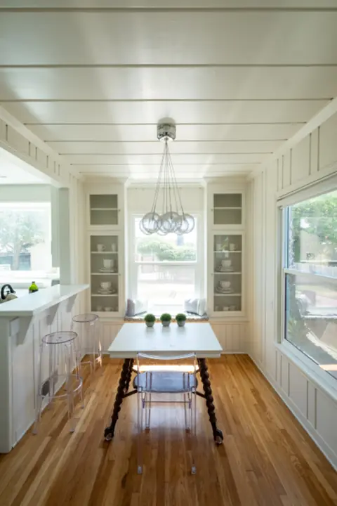
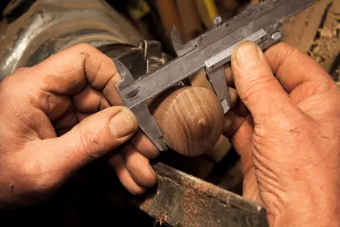
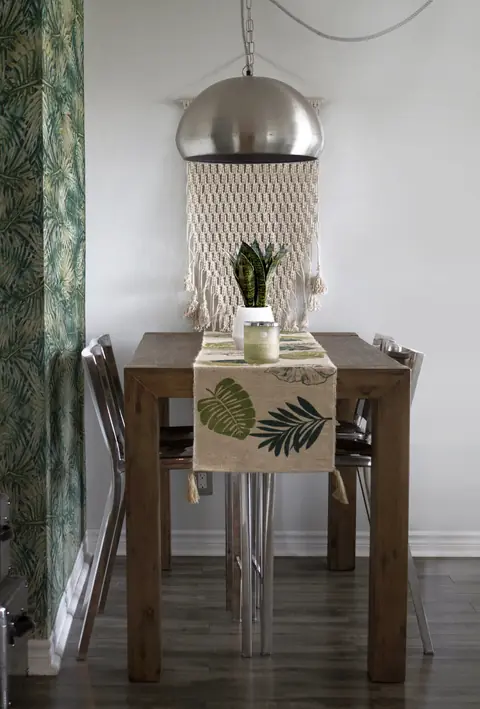
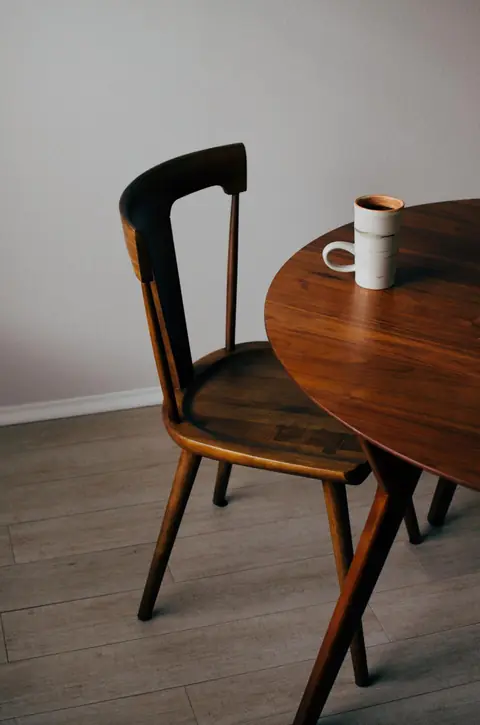
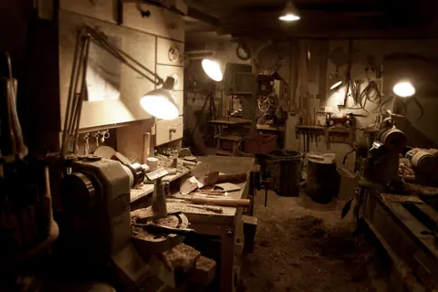

Cucine
Ante, piani e dispense progettati sullo spazio che hai, anche sotto le travi o in mansarda.
Falegnameria artigiana · dal 1987
Cucine, tavoli, armadi e restauri in legno massello. Veniamo a casa tua, prendiamo le misure e disegniamo insieme il mobile che ti serve davvero.

fatto
Ante, piani e dispense progettati sullo spazio che hai, anche sotto le travi o in mansarda.

Tavoli allungabili e sedute comode, nelle essenze che preferisci: rovere, noce, ciliegio.

Ridiamo vita ai mobili di famiglia: pulitura, consolidamento e lucidatura a gommalacca.
Veniamo da te, misuriamo e ascoltiamo come vivi lo spazio. È gratuito.
Ti mostriamo il progetto con legni e finiture, con un prezzo chiaro e definitivo.
Costruiamo tutto a mano e montiamo noi, lasciando casa pulita.

Nel nostro laboratorio lavoriamo il legno come una volta, con macchine moderne dove servono e pialla a mano dove fanno la differenza. Scegliamo le tavole una per una e le lasciamo stagionare.
Puoi venire a trovarci: ti mostriamo le essenze e i lavori in corso.
Ti richiamiamo entro un giorno per fissare il sopralluogo gratuito. Puoi anche mandarci una foto dello spazio su WhatsApp.